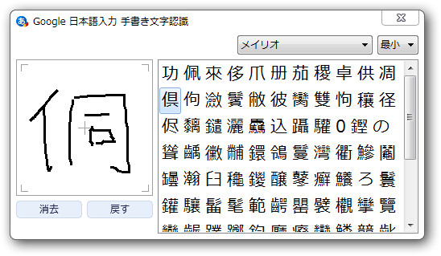
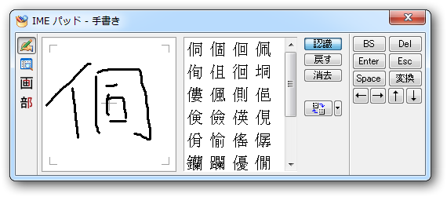

日本語入力システムあれこれ。
公開日：
最近は標準の日本語入力システムがすっかり Google 日本語入力 - ダウンロード になってしまった。やっぱり、標準で語彙をたくさんもっているのは便利。IMEの便利さは、
語彙の豊富さ ＋ 文節解釈の適切さ ＋ 変換候補の表示順序の適切さ
でだいたい決まるかなーと思うのだけど、「文節解釈の適切さ」は自分で"コマ切れ変換"を心がければIMEの能力差はそこまで気にならない。「変換候補の表示順序の適切さ」も、今時のIMEでそこまでひどいのはあまりない。正直なところ、Google IMEその点、だいぶお馬鹿な方だと思うけれど*1、「語彙の豊富さ」が圧倒的なので、全体としてはまぁまぁ許せるというか、むしろ使いやすく感じる。
けれど、最近は MS-IME も悪くないな、と思い始めた。というのも、まずソフトウェアの相性問題が少ない（参照：低い整合性レベル - だるろぐ）。そしてやはり、基本的な機能の作りこみがきちんとしている。たとえば、手書き入力をみてくれたまえ。

どっちが期待の動作か、一目瞭然だよね。まぁ、OSを作っている会社が作っているIMEだし、リファレンス実装みたいなもんだし、割り引いて評価すべき要素もあるけど、それでもやっぱり年輪を重ねただけのことはある。
問題は「語彙の豊富さ」だけれども、 Windows 8 の標準IMEで「オープン拡張辞書」がサポートされれば、状況はかなり好転するかもしれない。
- 窓の杜 - 【REVIEW】「Excel」テンプレートで「Office IME 2010」向けの“オープン拡張辞書”を作ろう
- 窓の杜 - 【REVIEW】「Office IME 2010」の“オープン拡張辞書”を作成「オープン拡張辞書エディタ」
インストールもアップデートも簡単。 SkyDrive で共有すれば、辞書の同期もそんなに難しくなさそうだ。できればそれもローミング機能*2で実現してほしいのだけど。
というわけで、［Ctrl］＋［Alt］キーでの IME 切り替えも最近は多用している。「Google 日本語入力」は便利だけど、［Ctrl］＋［Alt］キーを無効化してメインで使うほどの信頼はない。
徳島のアレはどうなのよ
去年まで買ってたけど、OSを再インストールするたびにアクティベーションするのが面倒になってきた。フォーマルな用途には一番適しているけれど、そうなるとカジュアルな用途にはあまり使いたくない（変な言葉を覚えちゃうので）。あと、「言葉狩り」問題*3が気になる。
中国のアレはどうなのよ
［Ctrl］＋［Alt］キーでの切り替えが異常に遅い。使い勝手に関しては……違和感が大きいが、既存の IME に慣れていなければ、ああいうのもありなのかな、と思う。殊更ディスるほど悪くないけれど、基本機能の完成度という点では一番劣る。けれど、スキン機能はちょっと面白いね。マネタイズにも繋がりそうだ。無償ソフトが生きていくにあたって、そういうのを考えておくのは大事なことだと思う。ようやく慣れてきたところへ公開停止、では泣くに泣けない。
あと、やっぱり会社が信用されてない。個人情報を収集されてるんじゃないか、とか。個人的には気にしてもしょうがないって感じだけど、気にする気持ちもわからないでもないし、嫌なもんを無理に使うこともないかなと思う。まぁ、そういうのを気にする人とはターゲットが違うというのが正直な感想。